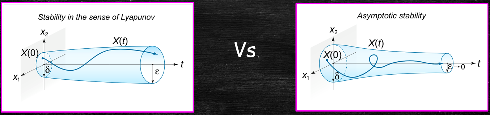

Jonathan Crofts
Nottingham Trent University
System stability is important for many reasons
In this course we restrict to questions of stability for equilibria of linear systems
For a linear system of the form
\[ \color{#00FF00}{\boxed{\color{white}{ \frac{\mathrm{d}\mathbf{x}}{\mathrm{d}t} = A\mathbf{x}: \quad t \geq 0 }}} \]an equilibrium (or fixed) point $x^*$ is a point satisfying the equation
\[ \color{#00FF00}{\boxed{\color{white}{ A\mathbf{x}^*=\mathbf{0} }}} \]Such a point is stable if after a perturbation away from $\mathbf{x}^*$ the system returns to $\mathbf{x}^*$
Let us place the previously discussed ideas of stability on firmer ground
We call the unforced (or homogeneous) system the free system
\[ \color{#00FF00}{\boxed{\color{white}{ \frac{\mathrm{d}\mathbf{x}}{\mathrm{d}t} = A\mathbf{x}: \quad t \geq 0 }}} \]The obvious equilibrium point for the free system is the point $\mathbf{x}^*=\mathbf{0}$ and in fact this is the only one we need consider
To see this, suppose $\mathbf{x}^*=\mathbf{u}$ is a non-zero equilibrium, then we can make the following change of coordinates:
\[ \mathbf{y}=\mathbf{x}-\mathbf{u} \implies \frac{\mathrm{d}\mathbf{x}}{\mathrm{d}t} = A\mathbf{x}\longrightarrow \frac{\mathrm{d}\mathbf{y}}{\mathrm{d}t} = A\mathbf{y} \]That is we can move the fixed point to the origin via a change of coordinates and analyse its stability as with the trivial fixed point
We say that the equilibrium solution $\mathbf{x}^*=\mathbf{0}$ of the free system is stable if given $\epsilon>0$ there exists a $\delta>0$ such that
\[ ||\mathbf{x}(t)||<\epsilon \quad \forall t\geq 0 \]Provided $\displaystyle ||\mathbf{x}(0)||<\delta$
It is helpful to conisder what this means geometrically
The solution $\mathbf{x}^*$ is stable if after a 'small' perturbation the solution remains 'nearby'
There is a stronger form of stability
We say that the solution $\mathbf{x}^*$ is asymptotically stable if $\mathbf{x}(t)\to\mathbf{x}^*=\mathbf{0}$ whatever the initial perturbation
Let
\[ A = \begin{bmatrix}0&1\\-1&0\end{bmatrix} \]Then clearly $\mathbf{x}^*=0$ is an equilibrium solution
Recalling that
\[ e^{At} = \begin{bmatrix}\cos{t}&\sin{t}\\-\sin{t}&\cos{t}\end{bmatrix} \]Then for $\displaystyle \mathbf{x}(0)=\begin{bmatrix}x^{(1)}(0)&x^{(2)}(0)\end{bmatrix}^T$ we have
\[ \begin{align*} \mathbf{x}(t) = e^{At}\mathbf{x}_0 &=\begin{bmatrix}\cos{t}&\sin{t}\\-\sin{t}&\cos{t}\end{bmatrix}\begin{bmatrix}x^{(1)}(0)\\x^{(2)}(0)\end{bmatrix}\\ &=\begin{bmatrix}x^{(1)}(0)\cos{t}+x^{(2)}(0)\sin{t}\\-x^{(1)}(0)\sin{t}+x^{(2)}(0)\cos{t}\end{bmatrix} \end{align*} \]It follows that
\[ \begin{align*} ||\mathbf{x}(t)||_2^2 &= \left(x^{(1)}\cos{t}+x^{(2)}\sin{t}\right)^2+\left(-x^{(1)}\sin{t}+x^{(2)}\cos{t}\right)^2\\ &=(x^{(2)})^2+(x^{(1)})^2\\ &=||\mathbf{x}(0)||_2^2\\ \end{align*} \]Recall that the 2-norm of a vector $\displaystyle \mathbf{x} = \begin{bmatrix}x^{(1)}&x^{(2)}&\ldots&x^{(n)}\end{bmatrix}^T$ is given by
\[ ||\mathbf{x}||_2 = \sqrt{(x^{(1)})^2+(x^{(2)})^2+\cdots (x^{(n)})^2} \]What this all means, is that solutions of our ODE lie on a cylinder of radius $\displaystyle ||\mathbf{x}_0||_2$, that is, the system is stable but it is not asymptotically stable
Considerations of stability can be related to the eigenvalues of the matrix $A$
To see this recall that the solution of the system
\[ \frac{\mathrm{d}\mathbf{x}}{\mathrm{d}t} = A\mathbf{x}:\quad \mathbf{x}(0)=\mathbf{x}_0 \]is given by
\[ \mathbf{x}(t)=e^{At}\mathbf{x}_0=He^{Jt}H^{-1}\mathbf{x}_0 \qquad \text{(here } A=HJH^{-1}) \]Now for the Jordan matrix
\[ J = \begin{bmatrix}J_{n_1}&0&\cdots&0\\&J_{n_2}&\ddots&\vdots\\&&\ddots&0\\&&&J_{n_k}\end{bmatrix}\quad\text{with}\quad J_{n_i} = \begin{bmatrix}\lambda_i&1&\cdots&0\\&\lambda_i&\ddots&\vdots\\&&\ddots&1\\&&&\lambda_i\end{bmatrix} \]we have ...
With $\displaystyle e^{J_{n_i}t}$ being either
\[ e^{\lambda_it}\begin{bmatrix}1&0&\cdots&0\\&1&\ddots&\vdots\\&&\ddots&0\\&&&1\end{bmatrix}\in\mathbb{R}^{n_i\times n_i} \quad\text{or}\quad e^{\lambda_it}\begin{bmatrix}1&t&\cdots&\frac{1}{(n_i-1)!}t^{n_i-1}\\&1&\ddots&\vdots\\&&\ddots&t\\&&&1\end{bmatrix}\in\mathbb{R}^{n_i\times n_i} \]It follows that we can write
\[ \mathbf{x}(t) = He^{Jt}H^{-1}\mathbf{x}(0) = \sum_{i=1}^kP_i(t)e^{\lambda_it} \]Where the $P_i(t)$ is a vector-valued function whose components are polynomials
From the above result we can deduce the following:
This follows since exponential decay beats polynomial growth
Suppose that $A=HJH^{-1}$ where $J$ is one of either
\[ \begin{bmatrix}-1&0&0\\0&-1&1\\0&0&-1\end{bmatrix}\qquad \begin{bmatrix}i&&&\\&-i&&\\&&-2&\\&&&-1\end{bmatrix}\qquad \begin{bmatrix}-1&0&0\\0&1&1\\0&0&1\end{bmatrix} \]Determine the stability properties of a system of the form
\[ \frac{\mathrm{d}\mathbf{x}}{\mathrm{d}t} = A\mathbf{x}:\quad \mathbf{x}(0)=\mathbf{x}_0 \]in each case
All eigenvalues $\lambda_{1,2,3}=-1$ have negative real part so $\mathbf{x}^*=0$ is a. stable
Next
\[ \begin{bmatrix}i&&&\\&-i&&\\&&-2&\\&&&-1\end{bmatrix}\longrightarrow e^{Jt} = \begin{bmatrix}e^{it}&0&0&0\\0&e^{-it}&0&0\\0&0&e^{-2t}&0\\0&0&0&e^{-t}\end{bmatrix} \implies \text{stable but {\bf not} a. stable} \]This follows since the $\displaystyle e^{\pm it}=\cos{t}\pm i\sin{t}$ terms are bounded (i.e. they do not grow (or shrink))
Finally
\[ \begin{bmatrix}-1&0&0\\0&1&1\\0&0&1\end{bmatrix}\longrightarrow e^{Jt} = \begin{bmatrix}e^{-t}&0&0\\0&e^t&te^t\\0&0&e^t\end{bmatrix} \implies \text{unstable} \]The equilibrium solution is unstable since the $e^t$ terms tend to infinity as $t\to\infty$
We have that $\lambda_{2,3}=1>0$
A useful test for determining whether a matrix has all eigenvalues with negative real part is the Routh-Hurwitz stability criteria
Suppose the characteristic polynomial is given by
\[ \chi_A(t) = t^n+a_1t^{n-1}+a_2t^{n-2}+\cdots+a_{n-1}t+a_n \]Then we construct the Routh-Hurwitz matrix as follows
\[ \color{#00FF00}{\boxed{\color{white}{ H = \begin{bmatrix}a_1&a_3&a_5&\ldots&a_{2n-1}\\1&a_2&a_4&\ldots&a_{2n-2}\\ 0&a_1&a_3&\ldots&a_{2n-3}\\\vdots&&&&\vdots\\0&\ldots&0&\ldots&a_n\end{bmatrix} }}} \]Alongside the condition that $a_i=0$ for $i>n$
Importantly, the system with characteristic polynomial $\displaystyle\chi_A(t)$ is asymptotically stable if and only if all the leading principal minors of $H$ are positive:
\[ \begin{align*} H_1 &= |a_1| = a_1>0\\\\ H_2 &= \begin{vmatrix}a_1&a_3\\1&a_2\end{vmatrix}>0\\\\ H_2 &= \begin{vmatrix}a_1&a_3&a_5\\1&a_2&a_6\\0&a_1&a_3\end{vmatrix}>0 \end{align*} \]And so on ...
An example should make the above ideas clearer
If a matrix has characteristic polynomial
\[ \chi_A(t) = t^4+8t^3+19t^2+33t+36 \]Then
\[ H =\begin{bmatrix}8&33&0&0\\1&19&36&0\\0&8&33&0\\0&1&19&36\end{bmatrix} \]And so
\[ \begin{align*} H_1&=8 \quad H_2=\begin{vmatrix}8&33\\1&19\end{vmatrix}=119\\ H_3&=\begin{vmatrix}8&33&0\\1&19&36\\0&8&33\end{vmatrix} = 8\begin{vmatrix}19&36\\8&33\end{vmatrix}-33\begin{vmatrix}1&36\\0&33\end{vmatrix} = 1623 \end{align*} \]And $H_4=36|H_3|>0 \implies$ the free system is a. stable
In fact, the characteristic polynomial can be factorised as
\[ \chi_A(t) = (t+3)(t+4)(t^2+t+3) \]Which leads to
\[ \color{#00FF00}{\boxed{\color{white}{ \lambda_1=-3\quad\lambda_2=-4\quad\text{and}\quad \lambda_{3,4}=\frac{-1\pm\sqrt{11}i}{2} }}} \]In the case of a quadratic of the form
\[ \chi_A(t)=t^2+at+b \]the resulting eigenvalues have negative real part iff $a, b>0$
It is left as an exercise to prove this